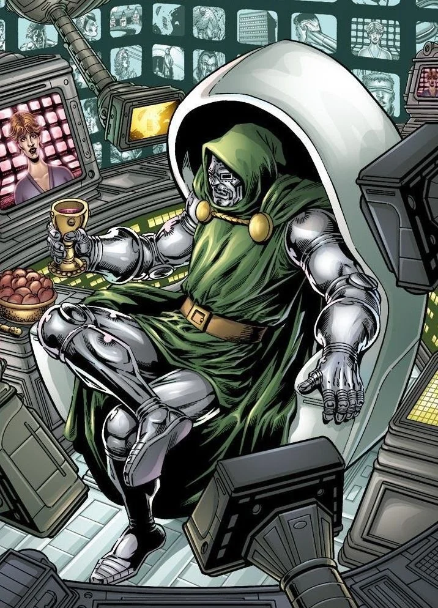
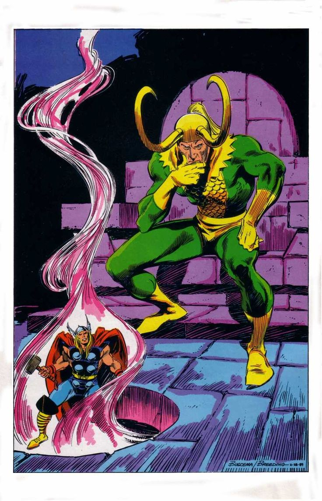

Captain America

Captain America is a Marvel Comics superhero, originally Steve Rogers, a frail young man transformed into a peak-human super-soldier by the Super-Soldier Serum during World War II. He’s known for his unshakable moral compass, leadership (often of the Avengers), and expert hand-to-hand combat and tactical skills. His iconic indestructible shield (made from vibranium) is both a defensive tool and a throwing weapon. Captain America first appeared in Captain America Comics #1 in 1941 and remains a symbol of courage and patriotic idealism.
Spider-Man

Spider-Man is a Marvel Comics superhero created by Stan Lee and Steve Ditko who first appeared in Amazing Fantasy #15 (1962). His alter ego, Peter Parker, is a New York teen-turned-young-adult who gains spider-like powers—wall-crawling, super strength and agility, and a “spider-sense”—after being bitten by a radioactive spider. Balancing everyday struggles (school, work, family) with crimefighting, Spider-Man’s stories center on the theme “with great power comes great responsibility.” He’s known for his red-and-blue costume, homemade web-shooters (in many versions), and iconic rogues’ gallery including the Green Goblin, Doctor Octopus, and Venom.
Doctor Doom
Doctor Doom (Victor von Doom) is a Marvel Comics supervillain and occasional antihero, created by Stan Lee and Jack Kirby; he first appeared in Fantastic Four #5 (1962). A brilliant scientist and skilled sorcerer, Doom is the absolute ruler of the nation of Latveria, wearing iconic armored battle-suit and a metal mask to hide facial scars from a failed experiment he blames on Reed Richards. His combination of genius-level intellect, advanced technology (Doombots, energy weapons, force fields) and mastery of magic makes him one of the Marvel Universe’s most formidable and complex antagonists—prideful, driven by a desire for control and to restore his family’s honor, sometimes depicted with ruthless tyranny and other times as a ruler who genuinely believes his harsh methods serve a greater good.
Loki
Loki is Marvel Comics’ cunning Asgardian god of mischief, first appearing in Journey into Mystery #85 (1962), created by Stan Lee, Larry Lieber, and Jack Kirby. Born a Frost Giant but raised by Odin as Thor’s adoptive brother, Loki is a powerful sorcerer and shapeshifter whose jealousy and appetite for chaos frequently put him at odds with Thor and the other heroes. Over time he has shifted between villain, antihero, and occasional ally, taking on different forms (including Lady Loki and Kid Loki) and motivations that make him one of Marvel’s most complex, unpredictable characters.